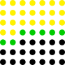

OI Wiki · prijevod · Teorija grafovaOI Wiki · translation · Graph theory
Slučajna šetnja na grafuRandom walks on graphs
Sadržaj
Ova stranica obrađuje problem slučajne šetnje na grafu. Problem se proučava iz tri kuta: rešetkasti grafovi, rijetki grafovi i opći grafovi; opisane su razne metode za rješavanje ove vrste problema te su uspoređene njihove prednosti i nedostaci pri rješavanju različitih zadataka.
Definicija
Zadan je usmjereni jednostavni graf \(G=(V, E)(V=\{v_1, v_2, \cdots, v_{|V|}\})\), početni vrh \(s \in V\) i završni vrh \(t \in V\); svaki brid \(e=\left(x, y\right)\) ima pozitivnu težinu \(w_e\) tako da za svaki \(x \in V \backslash\left\{t\right\}\) vrijedi \(\sum_{\left(x, y\right) \in E} w_{\left(x, y\right)}=1\), a iz svakog vrha \(x\) postoji put koji vodi u \(t\). Figura kreće iz početnog vrha i svake sekunde iz trenutnog vrha \(x\) s vjerojatnošću \(w_{(x, y)}\) bira izlazni brid \(\left(x, y\right)\) i prelazi u \(y\); kad stigne u završni vrh, zaustavlja se. Treba odrediti očekivano utrošeno vrijeme.
Zapravo se ovaj problem može zapisati i u matričnom obliku. Definirajmo matricu \(P\):
Traženi odgovor je tada:
gdje \(\left(P^k\right)_{s, t}\) označava vjerojatnost da se završni vrh prvi put dosegne nakon \(k\) koraka. Kad je graf konačan i svi vrhovi mogu doseći završni vrh, iz definicije \(P\) može se dokazati da su sve njezine svojstvene vrijednosti manje od 1, pa odgovor sigurno konvergira.
Radi jednostavnosti, na ovoj stranici, ako nije drugačije rečeno, \(n\) označava \(|V|\), a \(m\) označava \(|E|\).
Osim toga, na ovoj stranici rijetki graf označava graf u kojem je broj bridova istog reda veličine kao broj vrhova.
Rešetkasti grafovi
Primjer 1 Circles of Waiting
Figura se na početku nalazi u točki \((0,0)\) pravokutnog koordinatnog sustava. Svake sekunde figura se nasumično pomiče. Ako je trenutno u \((x, y)\), sljedeće sekunde s vjerojatnošću \(p_1\) prelazi u \((x-1, y)\), s vjerojatnošću \(p_2\) u \((x, y-1)\), s vjerojatnošću \(p_3\) u \((x+1, y)\), a s vjerojatnošću \(p_4\) u \((x, y+1)\). Zajamčeno je \(p_1+p_2+p_3+p_4=1\). Odredite očekivano vrijeme nakon kojeg će se pomaknuti na položaj čija je euklidska udaljenost od ishodišta veća od \(R\). \(0 \leq R \leq 50\), \(p_1, p_2, p_3, p_4>0\), odgovor se traži modulo \(10^9+7\).
Naivni pristup
Neka \(f(i, j)\) označava očekivano vrijeme potrebno da figura iz \((i, j)\) dođe na položaj čija je euklidska udaljenost od ishodišta veća od \(R\). Prijelazna jednadžba glasi:
Budući da prijelazi nemaju topološki poredak, treba koristiti Gaussovu eliminaciju. Vremenska složenost je \(O\left(R^6\right)\), što ne prolazi ovaj zadatak.
Izravna eliminacija
Uočimo da je većina koeficijenata jednadžbi koje treba eliminirati jednaka 0; ako pri eliminaciji računamo samo na pozicijama gdje je vrijednost različita od 0, složenost se smanjuje.
Promotrimo postupak eliminacije: jednadžbe eliminiramo redom odozgo prema dolje u koordinatnom sustavu, a unutar istog retka slijeva nadesno. Već eliminirane jednadžbe obojimo žuto, točke susjedne žutima obojimo zeleno, a ostale točke crno, kao na slici:

Sljedeći korak je eliminacija jednadžbe koja odgovara sljedećem zelenom polju. U toj jednadžbi samo varijable zelenih polja i prvog crnog polja ispod njega mogu imati koeficijent različit od 0; a samo u jednadžbama zelenih polja i prvog crnog polja ispod njega koeficijent varijable trenutnog polja može biti različit od 0.
Uočimo da zelenih polja ima samo \(O(R)\), pa je složenost eliminacije jedne jednadžbe \(O\left(R^2\right)\). Ukupno ima samo \(O\left(R^2\right)\) jednadžbi, pa se složenost smanjuje na \(O\left(R^4\right)\), što prolazi ovaj zadatak.
Metoda glavnih varijabli
Jednadžbi i varijabli ima po \(O\left(R^2\right)\); ako bismo veličinu problema smanjili na \(O(R)\), naivna Gaussova eliminacija bi prolazila.
Varijablu prvog polja slijeva u svakom retku proglasimo glavnom varijablom, ukupno njih \(2 R+1\), i pokušajmo varijable ostalih polja izraziti kao linearne funkcije tih glavnih varijabli. Promatramo stupac po stupac slijeva nadesno; za svako polje \((i, j)\) trenutnog stupca uočimo da su \(f(i, j), f(i-1, j), f(i, j-1), f(i, j+1)\) već poznate linearne funkcije glavnih varijabli, pa preslagivanjem prijelazne jednadžbe dobivamo:
Tako dobivamo prikaz \(f(i+1, j)\) kao linearne funkcije glavnih varijabli. Ako je \((i+1, j)\) već na euklidskoj udaljenosti od ishodišta većoj od \(R\), dobivamo jednadžbu \(f(i+1, j)=0\). Na kraju dobivamo \(2 R+1\) jednadžbi, na koje primijenimo Gaussovu eliminaciju.
U fazi rekurzivnog izvođenja linearnih funkcija glavnih varijabli ima \(O\left(R^2\right)\) varijabli, a izvođenje jedne varijable traje \(O(R)\); nakon toga je veličina problema smanjena na \(O(R)\). Oba dijela imaju vremensku složenost \(O\left(R^3\right)\), pa je i ukupna složenost \(O\left(R^3\right)\), što prolazi ovaj zadatak.
Usporedba dvaju pristupa
Usporedimo oba pristupa s više strana:
Što se tiče vremenske složenosti, najgora složenost metode glavnih varijabli na rešetkastom grafu je \(O(n \sqrt{n})\) (najveća je kad su i duljina i širina rešetke reda \(O(\sqrt{n})\)), dok je najgora složenost izravne eliminacije na rešetkastom grafu \(O\left(n^2\right)\); metoda glavnih varijabli je bolja.
Što se tiče preciznosti, za zadatke u kojima se računa s realnim brojevima umjesto modulo, izravna eliminacija preciznija je od metode glavnih varijabli.
Što se tiče primjenjivosti, dva su pristupa prikladna za različite situacije.
Kad u rešetkastom grafu postoje prepreke ili bridovi s vjerojatnošću prolaska \(0\), metoda glavnih varijabli za svaku prepreku ili brid s vjerojatnošću \(0\) treba dodati jednu glavnu varijablu; kad je broj prepreka ili bridova s vjerojatnošću \(0\) veći od \(O(R)\), složenost metode glavnih varijabli raste, dok složenost izravne eliminacije ostaje ista.
No metoda glavnih varijabli može eliminirati i jednadžbe slične onima na rešetkastom grafu, npr. \(f(i, j)=p_1 f(i+1, j)+p_2 f(i, j+1)+p_3 f(\operatorname{pre}(i, j))+1\), gdje je \(\operatorname{pre}(i, j)=(x, y)(x \leq i, y \leq j)\) vrijednost zadana u zadatku, dok analiza složenosti izravne eliminacije u ovom modelu ne vrijedi.
Osim toga, za računanje determinante matrice susjedstva rešetkastog grafa ne može se koristiti metoda glavnih varijabli; složenost se može poboljšati samo izravnom eliminacijom.
Ukratko, oba pristupa imaju svoje prednosti i treba ih odabrati prema konkretnom zadatku.
Rijetki grafovi
Primjer 2 Expected Value
Zadan je jednostavan neusmjeren povezan rijedak graf \(G=(V, E)\). Figura se na početku nalazi u \(v_1\); svake sekunde figura ravnomjerno nasumično bira jedan od bridova incidentnih s trenutnim vrhom i prelazi u vrh na koji on pokazuje. Odredite očekivano vrijeme dolaska u \(v_n\). \(n \leq 2000\), odgovor se traži modulo \(p\), gdje je \(p\) prost broj nasumično odabran iz intervala \(\left[10^9, 1.01 \times 10^9\right]\).
Osnove
Definicija 4.1. Svaki polinom \(p(λ)\) za koji vrijedi \(p(A) = 0\) naziva se poništavajući polinom matrice \(A\).
Definicija 4.2. Neka \(I_n\) označava jediničnu matricu reda \(n\). Karakteristični polinom matrice \(A\) dimenzija \(n × n\) definira se kao \(p(λ) = \det(λI_n - A)\), gdje \(\det\) označava determinantu matrice. Lako se vidi da stupanj karakterističnog polinoma matrice \(A\) reda \(n\) ne prelazi \(n\).
Teorem 4.2. (Cayley–Hamiltonov teorem) Karakteristični polinom bilo koje matrice njezin je poništavajući polinom.
Stoga ni stupanj poništavajućeg polinoma najmanjeg stupnja matrice reda \(n\) ne prelazi \(n\).
Rješavanje izvornog problema
Uočimo da je očekivano vrijeme šetnje \(E(t)=\sum_{i\geq0}\Pr[t>i]\); ako možemo izračunati vjerojatnost da šetnja nakon \(i\) koraka još nije završila, zbroj po svim \(i ≥ 0\) daje odgovor.
Neka \(f(i, j)\) označava vjerojatnost da smo nakon \(i\) koraka u vrhu \(j\) i da još nismo posjetili \(n\). Tada vrijedi:
gdje \(\deg_k\) označava stupanj vrha \(k\).
Uočimo da prijelaz za \(f\) ne ovisi o \(i\), pa se jedan prijelaz može shvatiti kao množenje matricom, tj. \(f{i+1}=f_iM\). Budući da stupanj minimalnog poništavajućeg polinoma matrice \(M\) ne prelazi \(n\), ni duljina najkraće rekurzije za \(f\) ne prelazi \(n\), pa ni duljina najkraće rekurzije za \(\Pr[t>i]=\sum_{j=1}^{n-1}f(i,j)\) ne prelazi \(n\). U vremenu \(O(nm)\) možemo izračunati \(\Pr[t>0],\Pr[t>1],\cdots,\Pr[t>3n]\), a zatim Berlekamp–Masseyjevim algoritmom u vremenu \(O(n^2)\) pronaći najkraću rekurziju za \(\Pr[t > i]\).
Promotrimo računanje funkcije izvodnice linearno rekurzivnog niza \(a\) reda \(k\). Pretpostavimo da za \(i ≥ i_0\) vrijedi \(a_i=\sum_{j=1}^kc_ja_{i-j}\), i označimo funkcije izvodnice od \(a\) i \(c\) s \(A(x)\) i \(C(x)\). Tada je \(A(x)=A(x)C(x)+A_0(x)\), gdje je \(A_0(x)\) određen članovima s \(i < i_0\).
Vratimo se izvornom problemu: budući da možemo odrediti najkraću rekurziju za \(\Pr[t > i]\), možemo izračunati \(C(x)\) i \(A_0(x)\) (s istim definicijama kao u prethodnom odlomku), a preslagivanjem dobivamo \(A(x)=\frac{A_0(x)}{1-C(x)}\). Tražimo \(\sum_{i\geq0}[x^i]A(x)\); lako se vidi da je ta vrijednost jednaka \(A(1)\), pa je dovoljno uvrstiti \(x = 1\). Budući da je modul nasumičan prost broj, možemo smatrati da nazivnik neće biti \(0\).
Tako smo zadatak riješili u vremenskoj složenosti \(O(nm+n^2)\). Ako je broj bridova grafa \(G\) istog reda kao broj vrhova, složenost u ovom zadatku možemo smatrati \(O(n^2)\).
Opći grafovi
Primjer 3 Frank
Zadan je jednostavan jako povezan usmjeren graf \(G = (V, E)\). Za sve \(1 ≤ s ≤ n\), \(1 ≤ t ≤ n\), \(s ≠ t\) odgovorite na sljedeće pitanje: figura se na početku nalazi u \(v_s\); svake sekunde figura ravnomjerno nasumično bira jedan od izlaznih bridova trenutnog vrha i prelazi u vrh na koji on pokazuje. Odredite očekivano vrijeme dolaska u \(v_t\). \(3 ≤ n ≤ 400\).
Analiza i transformacija
Neka \(p_{i, j}\) označava vjerojatnost da figura u vrhu \(i\) odabere izlazni brid \((i, j)\) i prijeđe u \(j\); posebno, ako izlazni brid ne postoji, vjerojatnost je \(0\). Neka \(f_{i,j}\) označava očekivano vrijeme slučajne šetnje iz \(i\) do \(j\); posebno, \(f_{i,i} = 0\). Za \(i ≠ j\) prijelazna jednadžba glasi:
Za \(i = j\), neka \(g_i\) označava očekivano vrijeme prvog povratka u \(i\) pri slučajnoj šetnji iz \(i\); tada:
Radi preglednosti zapišimo prijelazne jednadžbe u matričnom obliku. Neka \(P\) označava prijelaznu matricu ovog grafa, \(F\) matricu odgovora, \(I\) jediničnu matricu reda \(n\), \(J\) matricu reda \(n\) sa svim jedinicama, a \(G\) matricu reda \(n\) takvu da je \(G_{i,i} = g_i\), a ostale pozicije su \(0\). Tada:
Ako možemo izračunati \(G\), ostaje samo riješiti jednadžbu:
Računanje G
Definicija 5.1. Stacionarna distribucija prijelazne matrice \(P\) reda \(n\) je \(n\)-dimenzionalni vektor \(π\) takav da \(\sum_{i=1}^{n}\pi_{i}=1\) i \(πP = π\). Pri tome je vrijednost svake komponente \(π\) u intervalu \([0,1]\).
Lako se uočava praktično značenje stacionarne distribucije. Ako se u nekom trenutku figura s vjerojatnošću \(π_i\) nalazi u \(v_i\), tada u svakom kasnijem trenutku figura i dalje zadovoljava ovu raspodjelu vjerojatnosti. Vektor \(π\) možemo izračunati u vremenu \(O(n^3)\) rješavanjem sustava Gaussovom eliminacijom. Kakva je, dakle, veza između \(π\) i \(G\)?
Teorem 5.1. Za svaki \(1 ≤ i ≤ n\) vrijedi \(π_ig_i = 1\).
Dokaz
Iz \(F = J - G + PF\) preslagivanjem dobivamo:
Množenjem obiju strana s lijeve strane s \(π\) dobivamo:
Po definiciji \(π\) vrijedi \(πP = π\), pa:
Stoga:
Time je tvrdnja dokazana.
Dakle, uvođenjem stacionarne distribucije možemo izračunati \(G\) u vremenu \(O(n^3)\).
Rješavanje izvornog problema
Pri rješavanju sustava nailazimo na problem: \((I - P)\) nije punog ranga, pa se sustav ne može riješiti množenjem inverznom matricom.
Definicija 5.2. Usmjereno razapinjuće stablo usmjerenog grafa \(G = (V,E)\) s korijenom \(r\in V\) je podgraf \(T = (V,A)\) grafa \(G\) takav da:
- za svaki \(i ≠ r\) izlazni stupanj od \(i\) je \(1\);
- izlazni stupanj od \(r\) je \(0\);
- u \(T\) nema ciklusa.
Lema 5.1. (Teorem o matrici i stablima za usmjerene grafove) Za usmjereni graf \(G\) neka \(D\) označava njegovu matricu izlaznih stupnjeva, tj. \(D_{i,i} = d_i\), \(D_{i,j} = 0(i ≠ j)\), gdje je \(d_i\) izlazni stupanj vrha \(i\), a \(A\) njegovu matricu susjedstva. Tada je broj usmjerenih razapinjućih stabala s korijenom \(r\) jednak determinanti matrice \(D - A\) bez \(r\)-tog retka i \(r\)-tog stupca.
Teorem 5.2. Za prijelaznu matricu \(P\) jako povezanog grafa \(G = (V,E)\), rang matrice \((I - P)\) jednak je \(n - 1\).
Dokaz
Budući da se množenjem nekog retka matrice konstantom različitom od nule rang ne mijenja, pomnožimo \(i\)-ti redak matrice \((I - P)\) izlaznim stupnjem vrha \(v_i\) i dobijemo novu matricu \(L\); dovoljno je dokazati da je rang matrice \(L\) jednak \(n - 1\).
Budući da je zbroj svakog retka matrice \(L\) jednak \(0\), zbrajanjem svih stupčanih vektora matrice \(L\) dobivamo nul-vektor, tj. ti su vektori linearno
zavisni, pa rang matrice \(L\) nije \(n\).
Lako se vidi da je \(L\) jednaka matrici izlaznih stupnjeva grafa \(G\) umanjenoj za njegovu matricu susjedstva, pa po lemi 5.1 determinanta matrice \(L\) bez \(i\)-tog retka i \(i\)-tog stupca
predstavlja broj usmjerenih razapinjućih stabala s korijenom \(v_i\).
Budući da je G jako povezan, broj usmjerenih razapinjućih stabala s korijenom u bilo kojem vrhu različit je od \(0\), tj. \(L\) bez \(i\)-tog retka i
\(i\)-tog stupca i dalje je punog ranga.
Budući da se dodavanjem stupca rang ne smanjuje, svi redčani vektori matrice \(L\) bez \(i\)-tog retka linearno su nezavisni. Dakle, rang matrice \(L\) je \(n - 1\).
Vratimo se izvornom problemu i promotrimo rješavanje njegova sustava. Radi jednostavnosti zapišimo sustav u obliku \(AX = B\),
gdje su \(A\), \(B\) poznati, a treba odrediti \(X\). Budući da \(A\) nije punog ranga, rješenja ima beskonačno mnogo; najprije nađimo jedno partikularno rješenje.
Gaussovu eliminaciju provodimo istodobno na \(A\) i \(B\). Prvih \(n - 1\) redaka matrice \(A\) eliminiramo u oblik u kojem su vrijednosti samo na glavnoj dijagonali i u \(n\)-tom stupcu,
a posljednji redak u sve nule, tj. u sljedeći oblik:
Stavimo \(X_{n,i} = 0\); tako dobivamo jedno partikularno rješenje, označimo ga \(Y\). Zatim partikularno rješenje prilagodimo u pravo rješenje.
Uočimo da je \(X_{n,i} = 0\); iz kombinatornog značenja slijedi \(Y_{i,j} = 1 + Y_{j,j} + P_{i,k}X_{k,j}\), odakle se lako dobiva \(X_{i,j} = Y_{i,j} - Y_{j,j}\).
Time je zadatak riješen u vremenskoj složenosti \(O(n^3)\).
Literatura
- 浅谈图模型上的随机游走问题 (O problemu slučajne šetnje na grafovskim modelima). Zbornik radova kineske nacionalne reprezentacije za IOI 2019 (str. 17–26)
Contents
This page introduces the problem of random walks on graphs. It is studied from three angles: grid graphs, sparse graphs and general graphs; various methods for solving this kind of problem are introduced, and their advantages and disadvantages when solving different problems are compared.
Definition
Given a directed simple graph \(G=(V, E)(V=\{v_1, v_2, \cdots, v_{|V|}\})\), a starting vertex \(s \in V\) and a target vertex \(t \in V\), every edge \(e=\left(x, y\right)\) has a positive weight \(w_e\) such that for every \(x \in V \backslash\left\{t\right\}\), \(\sum_{\left(x, y\right) \in E} w_{\left(x, y\right)}=1\), and from every vertex \(x\) there is a path to \(t\). A token starts at the starting vertex; every second, from its current vertex \(x\), it chooses the outgoing edge \(\left(x, y\right)\) with probability \(w_{(x, y)}\) and moves to \(y\); it stops once it reaches the target. Find the expected time spent.
In fact, this problem can also be written in matrix form. Define the matrix \(P\):
The required answer is then:
where \(\left(P^k\right)_{s, t}\) is the probability of reaching the target for the first time after exactly \(k\) steps. When the graph is finite and every vertex can reach the target, it can be shown from the definition of \(P\) that all its eigenvalues are less than 1, so the answer necessarily converges.
For convenience, on this page, unless stated otherwise, \(n\) denotes \(|V|\) and \(m\) denotes \(|E|\).
Also, on this page a sparse graph means a graph whose number of edges is of the same order as its number of vertices.
Grid graphs
Example 1 Circles of Waiting
A token is initially placed at the point \((0,0)\) of the Cartesian plane. Every second the token moves randomly. If it is currently at \((x, y)\), in the next second it moves to \((x-1, y)\) with probability \(p_1\), to \((x, y-1)\) with probability \(p_2\), to \((x+1, y)\) with probability \(p_3\), and to \((x, y+1)\) with probability \(p_4\). It is guaranteed that \(p_1+p_2+p_3+p_4=1\). Find the expected time until it moves to a position whose Euclidean distance from the origin exceeds \(R\). \(0 \leq R \leq 50\), \(p_1, p_2, p_3, p_4>0\), the answer is taken modulo \(10^9+7\).
Naive approach
Let \(f(i, j)\) be the expected time for the token at \((i, j)\) to move to a position whose Euclidean distance from the origin exceeds \(R\). The transition equation is:
Since the transitions have no topological order, Gaussian elimination is required. The time complexity is \(O\left(R^6\right)\), which cannot pass this problem.
Direct elimination
Notice that most coefficients of the equations to be eliminated are 0; performing the elimination only at positions with nonzero values reduces the complexity.
Consider the elimination process: eliminate the equations in order from top to bottom in the coordinate system, and from left to right within the same row. Color the already eliminated equations yellow, the points adjacent to yellow points green, and the remaining points black, as in the figure below:
Next, the equation corresponding to the next green cell is eliminated. In this equation, only the variables of the green cells and of the first black cell below it can have nonzero coefficients; and only in the equations of the green cells and of the first black cell below it can the coefficient of the current cell's variable be nonzero.
Notice that there are only \(O(R)\) green cells, so eliminating a single equation costs \(O\left(R^2\right)\). There are only \(O\left(R^2\right)\) equations in total, so the complexity drops to \(O\left(R^4\right)\), which passes this problem.
Pivot-variable method
There are \(O\left(R^2\right)\) equations and variables; if the size could be reduced to \(O(R)\), naive Gaussian elimination would pass.
Take the variable of the leftmost cell in each row as a pivot variable, \(2 R+1\) in total, and try to express the variables of the other cells as linear functions of these pivot variables. Process the columns from left to right; for every cell \((i, j)\) of the current column, notice that \(f(i, j), f(i-1, j), f(i, j-1), f(i, j+1)\) are already known linear functions of the pivot variables, so rearranging the transition equation gives:
This yields the representation of \(f(i+1, j)\) as a linear function of the pivot variables. If \((i+1, j)\) already lies at Euclidean distance greater than \(R\) from the origin, we obtain an equation \(f(i+1, j)=0\). In the end, we obtain \(2 R+1\) equations, and Gaussian elimination on these equations suffices.
In the stage of recursively deriving the linear functions of the pivot variables, there are \(O\left(R^2\right)\) variables and deriving one variable takes \(O(R)\) time; afterwards, the problem size has been reduced to \(O(R)\). Both parts have time complexity \(O\left(R^3\right)\), so the total time complexity is also \(O\left(R^3\right)\), which passes this problem.
Comparison of the two approaches
Below we compare the two approaches from several angles:
In terms of time complexity, the worst-case complexity of the pivot-variable method on a grid graph is \(O(n \sqrt{n})\) (it is highest when both the length and the width of the grid are of order \(O(\sqrt{n})\)), while the worst-case complexity of direct elimination on a grid graph is \(O\left(n^2\right)\); the pivot-variable method is better.
In terms of precision, for problems requiring real-number computation instead of modular arithmetic, direct elimination is more precise than the pivot-variable method.
In terms of applicability, the two approaches suit different situations.
When the grid graph contains obstacles or edges with probability \(0\) of being taken, the pivot-variable method needs one extra pivot variable per obstacle or zero-probability edge; when the number of obstacles or zero-probability edges exceeds \(O(R)\), the complexity of the pivot-variable method increases, while the complexity of direct elimination remains unchanged.
However, the pivot-variable method can also eliminate transition equations similar to those of grid graphs, for example \(f(i, j)=p_1 f(i+1, j)+p_2 f(i, j+1)+p_3 f(\operatorname{pre}(i, j))+1\), where \(\operatorname{pre}(i, j)=(x, y)(x \leq i, y \leq j)\) is a value given by the problem, whereas the complexity analysis of direct elimination does not apply to this model.
Furthermore, computing the determinant of the adjacency matrix of a grid graph cannot use the pivot-variable method; only direct elimination can be used to improve the time complexity.
In summary, both approaches have their strengths, and the choice should be made according to the specific problem.
Sparse graphs
Example 2 Expected Value
Given a simple undirected connected sparse graph \(G=(V, E)\), a token is initially placed at \(v_1\); every second the token chooses, uniformly at random, one of the edges incident to the current vertex and moves to the vertex it points to. Find the expected time to reach \(v_n\). \(n \leq 2000\), the answer is taken modulo \(p\), where \(p\) is a prime randomly chosen from the interval \(\left[10^9, 1.01 \times 10^9\right]\).
Basics
Definition 4.1. Every polynomial \(p(λ)\) satisfying \(p(A) = 0\) is called an annihilating polynomial of the matrix \(A\).
Definition 4.2. Let \(I_n\) denote the identity matrix of order \(n\). The characteristic polynomial of an \(n × n\) matrix \(A\) is defined as \(p(λ) = \det(λI_n - A)\), where \(\det\) denotes the determinant of a matrix. It is easy to see that the degree of the characteristic polynomial of a matrix \(A\) of order \(n\) does not exceed \(n\).
Theorem 4.2. (Cayley–Hamilton theorem) The characteristic polynomial of any matrix is an annihilating polynomial of it.
Therefore, the degree of the minimal annihilating polynomial of a matrix of order \(n\) also does not exceed \(n\).
Solving the original problem
Notice that the expected walking time is \(E(t)=\sum_{i\geq0}\Pr[t>i]\); if we can compute the probability that the walk has not finished after \(i\) steps, summing over all \(i ≥ 0\) gives the answer.
Let \(f(i, j)\) be the probability of being at \(j\) after \(i\) steps without having visited \(n\). Then:
where \(\deg_k\) denotes the degree of \(k\).
Notice that the transition of \(f\) does not depend on \(i\), so one transition can be seen as multiplication by a matrix, i.e. \(f{i+1}=f_iM\). Since the degree of the minimal annihilating polynomial of \(M\) does not exceed \(n\), the length of the shortest linear recurrence of \(f\) does not exceed \(n\) either, so the length of the shortest recurrence of \(\Pr[t>i]=\sum_{j=1}^{n-1}f(i,j)\) also does not exceed \(n\). We can compute \(\Pr[t>0],\Pr[t>1],\cdots,\Pr[t>3n]\) in \(O(nm)\) time, and then use the Berlekamp–Massey algorithm to find the shortest recurrence of \(\Pr[t > i]\) in \(O(n^2)\) time.
Consider finding the generating function of a linear recurrent sequence \(a\) of order \(k\). Suppose that for \(i ≥ i_0\), \(a_i=\sum_{j=1}^kc_ja_{i-j}\), and let the generating functions of \(a\) and \(c\) be \(A(x)\) and \(C(x)\). Then \(A(x)=A(x)C(x)+A_0(x)\), where \(A_0(x)\) is determined by the terms with \(i < i_0\).
Back to the original problem: since we can find the shortest recurrence of \(\Pr[t > i]\), we can compute \(C(x)\) and \(A_0(x)\) (with the same definitions as in the previous paragraph), and rearranging gives \(A(x)=\frac{A_0(x)}{1-C(x)}\). We want \(\sum_{i\geq0}[x^i]A(x)\); it is easy to see that this value equals \(A(1)\), so substituting \(x = 1\) solves the problem. Since the modulus is a random prime, we may assume the denominator is not \(0\).
Thus we solved this problem in \(O(nm+n^2)\) time. If the numbers of vertices and edges of \(G\) are of the same order, the time complexity in this problem can be regarded as \(O(n^2)\).
General graphs
Example 3 Frank
Given a simple strongly connected directed graph \(G = (V, E)\), for all \(1 ≤ s ≤ n\), \(1 ≤ t ≤ n\), \(s ≠ t\), answer the following question: a token is initially placed at \(v_s\); every second the token chooses, uniformly at random, one of the outgoing edges of the current vertex and moves to the vertex it points to. Find the expected time to reach \(v_t\). \(3 ≤ n ≤ 400\).
Analysis and transformation
Let \(p_{i, j}\) be the probability that the token at \(i\) chooses the outgoing edge \((i, j)\) and moves to \(j\); in particular, the probability is \(0\) when the edge does not exist. Let \(f_{i,j}\) be the expected time of a random walk from \(i\) to \(j\); in particular, \(f_{i,i} = 0\). For \(i ≠ j\), the transition equation is:
For \(i = j\), let \(g_i\) be the expected time of first returning to \(i\) for a random walk starting at \(i\); then:
For easier observation, we write the transition equations in matrix form. Let \(P\) be the transition matrix of this graph, \(F\) the answer matrix, \(I\) the identity matrix of order \(n\), \(J\) the all-ones matrix of order \(n\), and \(G\) a matrix of order \(n\) with \(G_{i,i} = g_i\) and \(0\) elsewhere. Then:
If we can compute \(G\), we only need to solve the equation:
Computing G
Definition 5.1. A stationary distribution of a transition matrix \(P\) of order \(n\) is an \(n\)-dimensional vector \(π\) satisfying \(\sum_{i=1}^{n}\pi_{i}=1\) and \(πP = π\). Here every component of \(π\) lies in the interval \([0,1]\).
The practical meaning of a stationary distribution is easy to see. If at some moment the token is at \(v_i\) with probability \(π_i\), then at every later moment the token still follows this probability distribution. We can compute \(π\) in \(O(n^3)\) time by solving the equations with Gaussian elimination. So what is the relationship between \(π\) and \(G\)?
Theorem 5.1. For every \(1 ≤ i ≤ n\), \(π_ig_i = 1\).
Proof
From \(F = J - G + PF\), rearranging gives:
Multiplying both sides on the left by \(π\):
By the definition of \(π\), \(πP = π\), hence:
Therefore:
This proves the claim.
So, by introducing the stationary distribution, we can compute \(G\) in \(O(n^3)\) time.
Solving the original problem
While solving the equation we encounter a problem: \((I - P)\) does not have full rank, so the system cannot be solved by multiplying by an inverse matrix.
Definition 5.2. A directed spanning tree of a directed graph \(G = (V,E)\) rooted at \(r\in V\) is a subgraph \(T = (V,A)\) of \(G\) such that:
- for every \(i ≠ r\), the out-degree of \(i\) is \(1\);
- the out-degree of \(r\) is \(0\);
- \(T\) contains no cycle.
Lemma 5.1. (Matrix-tree theorem for directed graphs) For a directed graph \(G\), let \(D\) be its out-degree matrix, i.e. \(D_{i,i} = d_i\), \(D_{i,j} = 0(i ≠ j)\), where \(d_i\) is the out-degree of \(i\), and let \(A\) be its adjacency matrix. Then the number of directed spanning trees rooted at \(r\) equals the determinant of \(D - A\) with the \(r\)-th row and \(r\)-th column removed.
Theorem 5.2. For the transition matrix \(P\) of a strongly connected graph \(G = (V,E)\), the rank of \((I - P)\) is \(n - 1\).
Proof
Since multiplying a row of a matrix by a nonzero constant does not change its rank, we multiply the \(i\)-th row of \((I - P)\) by the out-degree of \(v_i\) to obtain a new matrix \(L\); it suffices to show that the rank of \(L\) is \(n - 1\).
Since every row of \(L\) sums to \(0\), summing all column vectors of \(L\) gives the zero vector, i.e. these vectors are linearly
dependent, so the rank of \(L\) is not \(n\).
It is easy to see that \(L\) equals the out-degree matrix of \(G\) minus its adjacency matrix, so by Lemma 5.1 the determinant of \(L\) with the \(i\)-th row and \(i\)-th column
removed is the number of directed spanning trees rooted at \(v_i\).
Since G is strongly connected, the number of directed spanning trees rooted at any vertex is nonzero, i.e. \(L\) with the \(i\)-th row and
\(i\)-th column removed still has full rank.
Since adding a column does not decrease the rank, all row vectors of \(L\) with the \(i\)-th row removed are linearly independent. Hence the rank of \(L\) is \(n - 1\).
Back to the original problem, consider solving its equation. For convenience, write the equation in the form \(AX = B\),
where \(A\), \(B\) are known and \(X\) must be found. Since \(A\) does not have full rank, there are infinitely many solutions; we first find a particular solution.
Perform Gaussian elimination on \(A\) and \(B\) together. Reduce the first \(n - 1\) rows of \(A\) to a form with values only on the main diagonal and in the \(n\)-th column,
and the last row to all zeros, i.e. the following form:
Set \(X_{n,i} = 0\); this yields a particular solution, denoted \(Y\). Next, adjust the particular solution into the true solution.
Note that \(X_{n,i} = 0\); from the combinatorial meaning we have \(Y_{i,j} = 1 + Y_{j,j} + P_{i,k}X_{k,j}\), from which \(X_{i,j} = Y_{i,j} - Y_{j,j}\) follows easily.
Finally, the problem is solved in \(O(n^3)\) time.
References
- 浅谈图模型上的随机游走问题 (On random walk problems on graph models). Papers of the Chinese national team candidates for IOI 2019 (pp. 17–26)